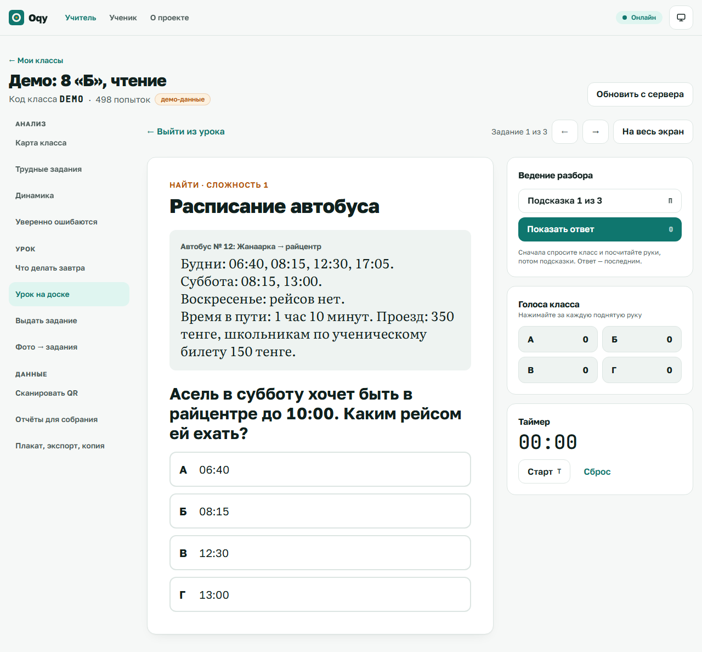
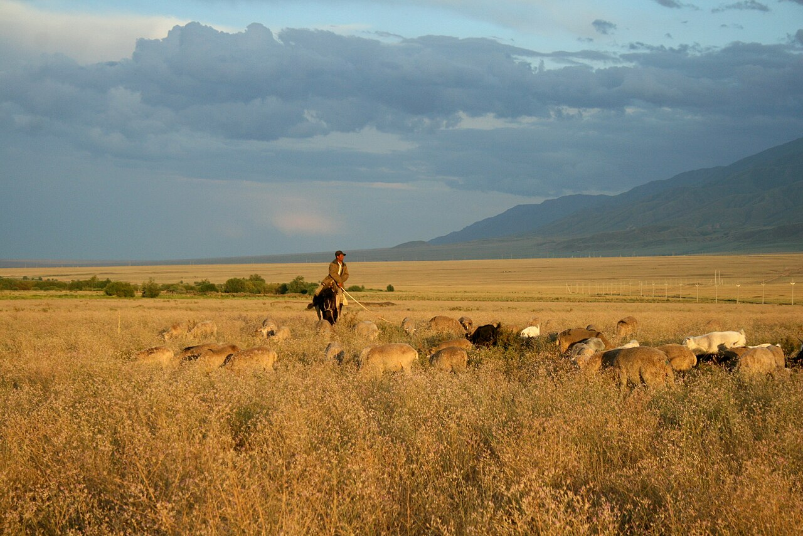
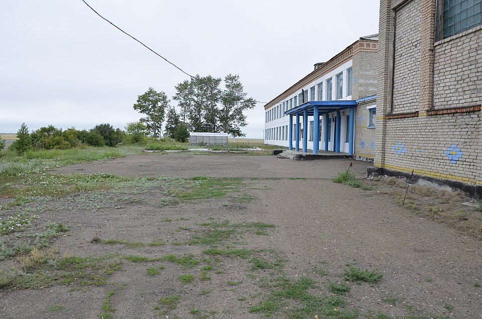
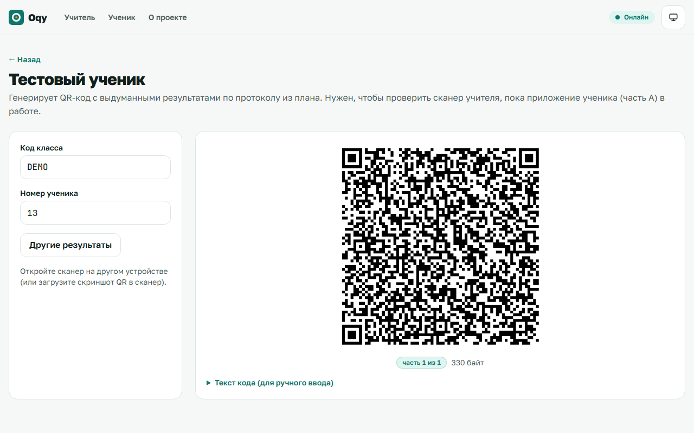
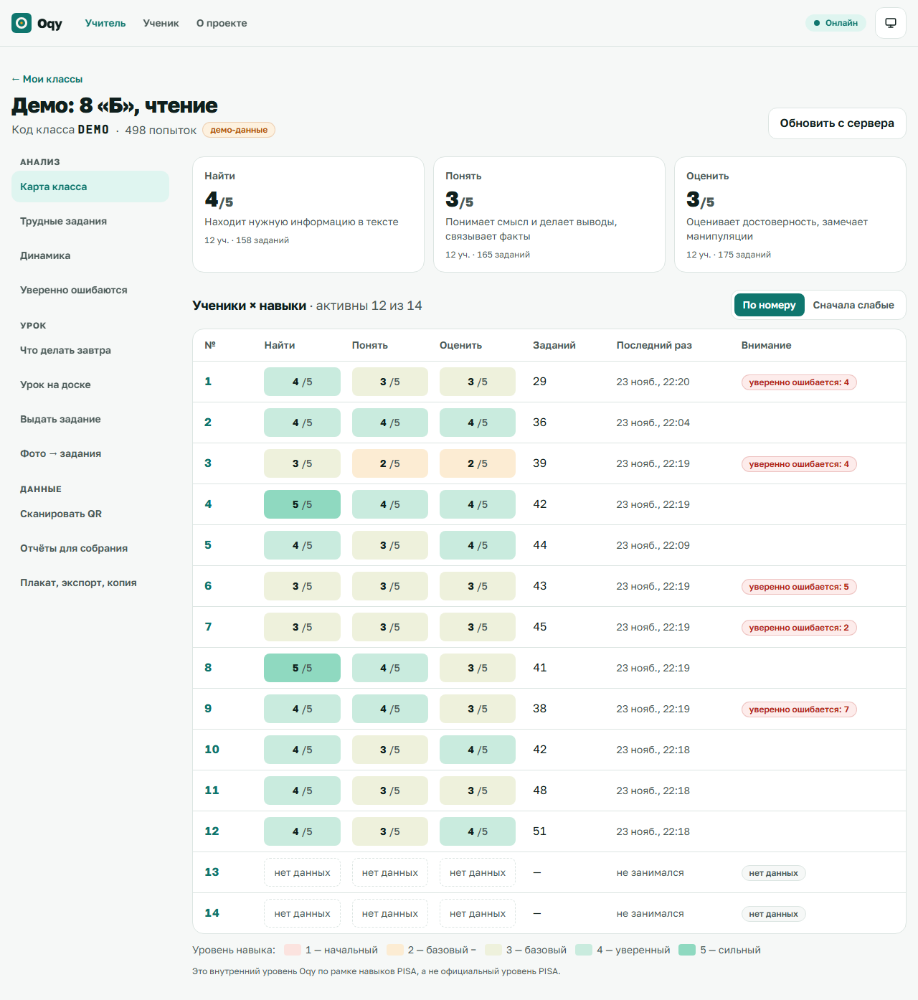
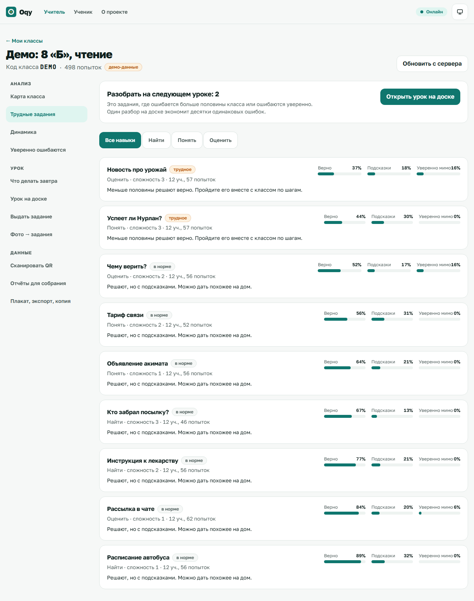
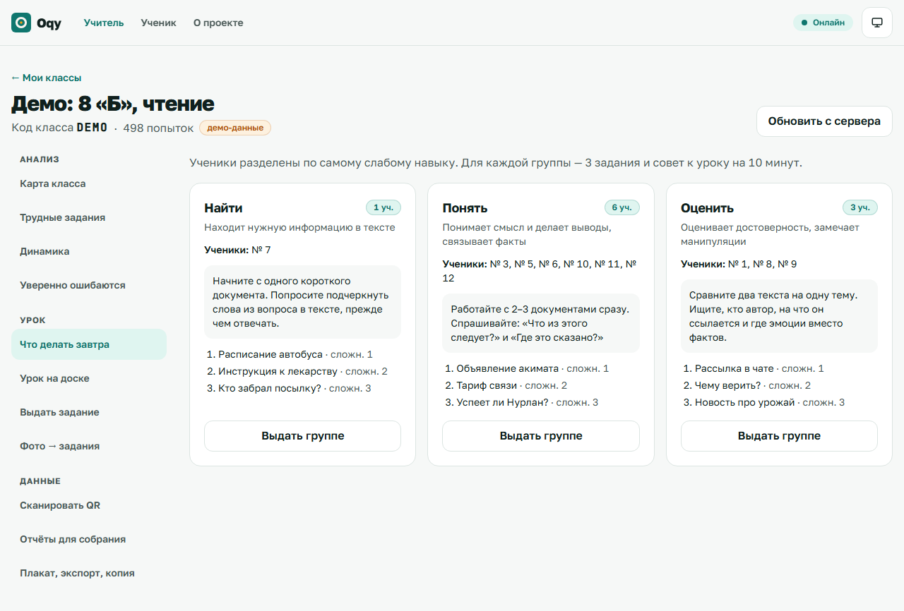

Урок на доске
Задание на проекторе, голоса по поднятым рукам, подсказки по одной, ответ последним.

Только 36% подростков в Казахстане понимают текст средней сложности. Oqy ведёт подсказками, а не выдаёт ответ.
36%
Казахстан: базовый уровень чтения, PISA-2025
69%
Средний уровень по странам ОЭСР
В стране 2 832 сельские школы. Интернет нужной скорости есть в 92% школ, а дома у ребёнка в ауле его часто нет совсем. Поэтому Oqy хранит задания и проверку в телефоне.

Задания на три навыка PISA лежат в приложении: найти, понять, оценить. После ошибки он получает подсказку, а не ответ. Сеть не нужна.

Ученик показывает QR, учитель сканирует камерой. Код сжат до 800 байт и проверяется контрольной суммой, дубли не появятся.

Ученики по трём навыкам, уровни от 1 до 5 и список тех, кто ошибается уверенно. Видно, кому что дать завтра.

Задание на проекторе, голоса по поднятым рукам, подсказки по одной, ответ последним.

Где ошибается больше половины класса или ошибаются уверенно.

Группы по слабому навыку: три задания и совет на 10 минут.

Фото страницы превращается в 3–6 заданий PISA с подсказками и ключом.
ChatGPT выдаёт готовый ответ и требует интернет. Oqy ответ не раскрывает, работает без сети и показывает учителю навыки класса.
Базовые задания вычитаны людьми. Задания из фото учитель проверяет и правит до раздачи.
На устройстве учителя. Имён нет: у ученика только код класса и номер. В ИИ уходит только текст ответа.
Для учеников бесплатно. Школы и акиматы платят за аналитику по классам и отчёты.